Summary
This experiment investigates water well drilling parameters. Central composite design to maximize flow rate and minimize turbidity by tuning drill depth, screen slot size, and gravel pack grade.
The design varies 3 factors: depth m (m), ranging from 15 to 60, screen slot mm (mm), ranging from 0.5 to 2.0, and gravel mm (mm), ranging from 2 to 8. The goal is to optimize 2 responses: flow rate lpm (L/min) (maximize) and turbidity ntu (NTU) (minimize). Fixed conditions held constant across all runs include aquifer = alluvial_sand, casing diam = 150mm.
A Central Composite Design (CCD) was selected to fit a full quadratic response surface model, including curvature and interaction effects. With 3 factors this produces 22 runs including center points and axial (star) points that extend beyond the factorial range.
Quadratic response surface models were fitted to capture potential curvature and factor interactions. The RSM contour plots below visualize how pairs of factors jointly affect each response.
Key Findings
For flow rate lpm, the most influential factors were screen slot mm (45.9%), gravel mm (38.8%), depth m (15.3%). The best observed value was 66.0 (at depth m = -3.57919, screen slot mm = 1.25, gravel mm = 5).
For turbidity ntu, the most influential factors were screen slot mm (35.5%), depth m (34.3%), gravel mm (30.2%). The best observed value was 1.5 (at depth m = 37.5, screen slot mm = 1.25, gravel mm = 5).
Recommended Next Steps
- Run confirmation experiments at the predicted optimal settings to validate the model.
- Consider whether any fixed factors should be varied in a future study.
Experimental Setup
Factors
| Factor | Low | High | Unit |
|---|
depth_m | 15 | 60 | m |
screen_slot_mm | 0.5 | 2.0 | mm |
gravel_mm | 2 | 8 | mm |
Fixed: aquifer = alluvial_sand, casing_diam = 150mm
Responses
| Response | Direction | Unit |
|---|
flow_rate_lpm | ↑ maximize | L/min |
turbidity_ntu | ↓ minimize | NTU |
Configuration
{
"metadata": {
"name": "Water Well Drilling Parameters",
"description": "Central composite design to maximize flow rate and minimize turbidity by tuning drill depth, screen slot size, and gravel pack grade"
},
"factors": [
{
"name": "depth_m",
"levels": [
"15",
"60"
],
"type": "continuous",
"unit": "m"
},
{
"name": "screen_slot_mm",
"levels": [
"0.5",
"2.0"
],
"type": "continuous",
"unit": "mm"
},
{
"name": "gravel_mm",
"levels": [
"2",
"8"
],
"type": "continuous",
"unit": "mm"
}
],
"fixed_factors": {
"aquifer": "alluvial_sand",
"casing_diam": "150mm"
},
"responses": [
{
"name": "flow_rate_lpm",
"optimize": "maximize",
"unit": "L/min"
},
{
"name": "turbidity_ntu",
"optimize": "minimize",
"unit": "NTU"
}
],
"settings": {
"operation": "central_composite",
"test_script": "use_cases/230_well_drilling/sim.sh"
}
}
Experimental Matrix
The Central Composite Design produces 22 runs. Each row is one experiment with specific factor settings.
| Run | depth_m | screen_slot_mm | gravel_mm |
|---|
| 1 | 37.5 | 1.25 | 5 |
| 2 | 60 | 0.5 | 8 |
| 3 | 15 | 2 | 2 |
| 4 | 37.5 | 2.61931 | 5 |
| 5 | 37.5 | 1.25 | 5 |
| 6 | -3.57919 | 1.25 | 5 |
| 7 | 37.5 | 1.25 | -0.477226 |
| 8 | 37.5 | 1.25 | 5 |
| 9 | 60 | 2 | 2 |
| 10 | 78.5792 | 1.25 | 5 |
| 11 | 37.5 | 1.25 | 5 |
| 12 | 37.5 | -0.119306 | 5 |
| 13 | 37.5 | 1.25 | 5 |
| 14 | 15 | 0.5 | 8 |
| 15 | 37.5 | 1.25 | 5 |
| 16 | 60 | 0.5 | 2 |
| 17 | 37.5 | 1.25 | 10.4772 |
| 18 | 60 | 2 | 8 |
| 19 | 37.5 | 1.25 | 5 |
| 20 | 15 | 0.5 | 2 |
| 21 | 15 | 2 | 8 |
| 22 | 37.5 | 1.25 | 5 |
Step-by-Step Workflow
1
Preview the design
$ python doe.py info --config use_cases/230_well_drilling/config.json
2
Generate the runner script
$ python doe.py generate --config use_cases/230_well_drilling/config.json \
--output use_cases/230_well_drilling/results/run.sh --seed 42
3
Execute the experiments
$ bash use_cases/230_well_drilling/results/run.sh
4
Analyze results
$ python doe.py analyze --config use_cases/230_well_drilling/config.json
5
Get optimization recommendations
$ python doe.py optimize --config use_cases/230_well_drilling/config.json
6
Multi-objective optimization
With 2 competing responses, use --multi to find the best compromise via Derringer–Suich desirability.
$ python doe.py optimize --config use_cases/230_well_drilling/config.json --multi
7
Generate the HTML report
$ python doe.py report --config use_cases/230_well_drilling/config.json \
--output use_cases/230_well_drilling/results/report.html
Features Exercised
| Feature | Value |
|---|
| Design type | central_composite |
| Factor types | continuous (all 3) |
| Arg style | double-dash |
| Responses | 2 (flow_rate_lpm ↑, turbidity_ntu ↓) |
| Total runs | 22 |
Analysis Results
Generated from actual experiment runs using the DOE Helper Tool.
Response: flow_rate_lpm
Top factors: screen_slot_mm (45.9%), gravel_mm (38.8%), depth_m (15.3%).
ANOVA
| Source | DF | SS | MS | F | p-value |
|---|
| Source | DF | SS | MS | F | p-value |
| depth_m | 4 | 251.1061 | 62.7765 | 0.340 | 0.8443 |
| screen_slot_mm | 4 | 1413.6061 | 353.4015 | 1.915 | 0.1920 |
| gravel_mm | 4 | 1695.2727 | 423.8182 | 2.297 | 0.1380 |
| Lack | of | Fit | 2 | 975.7879 | 487.8939 |
| Pure | Error | 7 | 1291.5000 | | |
| Error | 9 | 2267.2879 | 184.5000 | | |
| Total | 21 | 5627.2727 | 267.9654 | | |
Pareto Chart
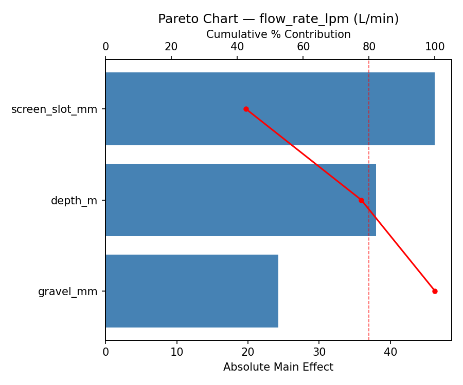
Main Effects Plot
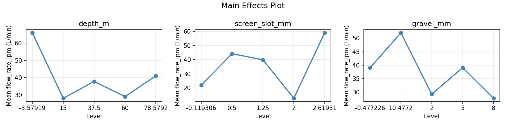
Normal Probability Plot of Effects
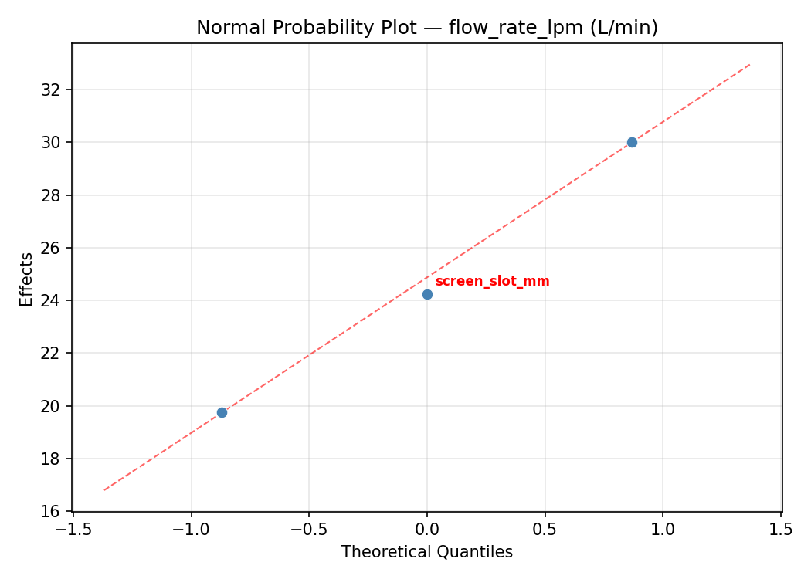
Half-Normal Plot of Effects
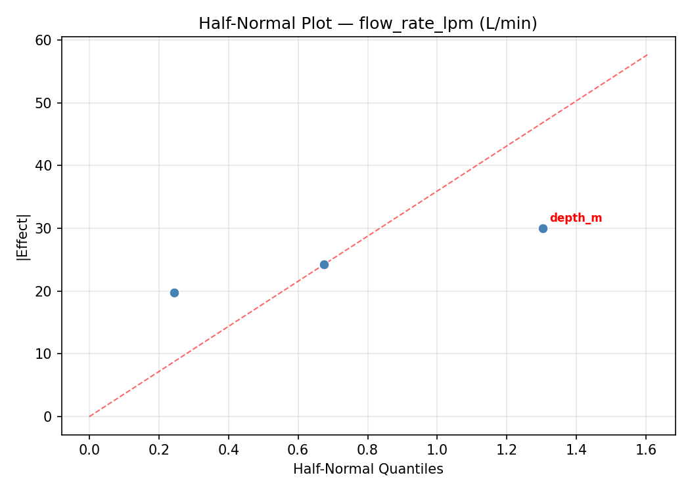
Model Diagnostics
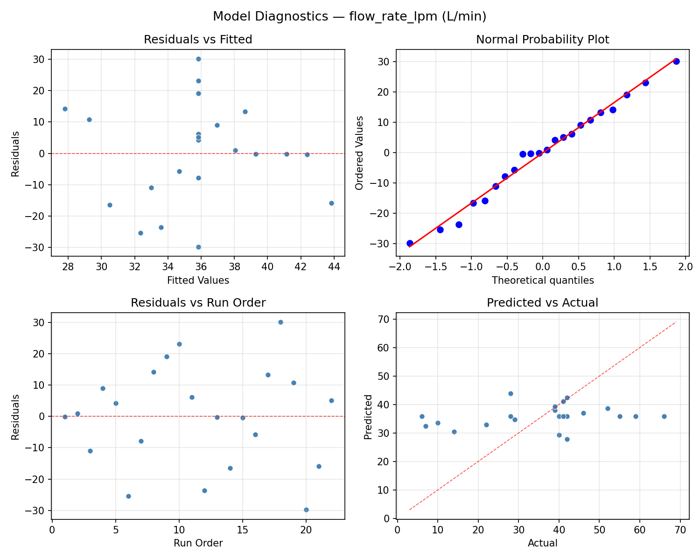
Response: turbidity_ntu
Top factors: screen_slot_mm (35.5%), depth_m (34.3%), gravel_mm (30.2%).
ANOVA
| Source | DF | SS | MS | F | p-value |
|---|
| Source | DF | SS | MS | F | p-value |
| depth_m | 4 | 74.5515 | 18.6379 | 4.568 | 0.0274 |
| screen_slot_mm | 4 | 38.5290 | 9.6323 | 2.361 | 0.1309 |
| gravel_mm | 4 | 45.9865 | 11.4966 | 2.818 | 0.0907 |
| Lack | of | Fit | 2 | 45.3074 | 22.6537 |
| Pure | Error | 7 | 28.5587 | | |
| Error | 9 | 73.8661 | 4.0798 | | |
| Total | 21 | 232.9332 | 11.0921 | | |
Pareto Chart
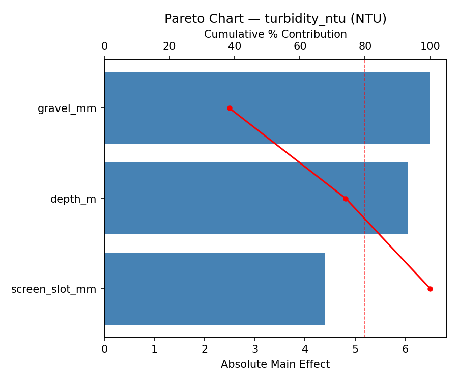
Main Effects Plot
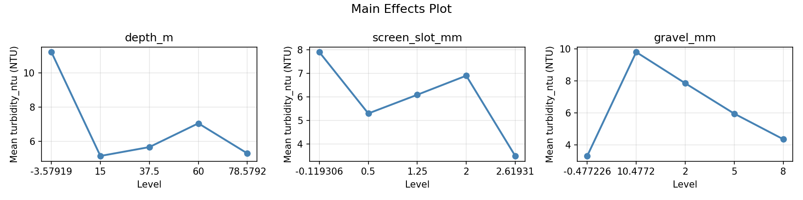
Normal Probability Plot of Effects
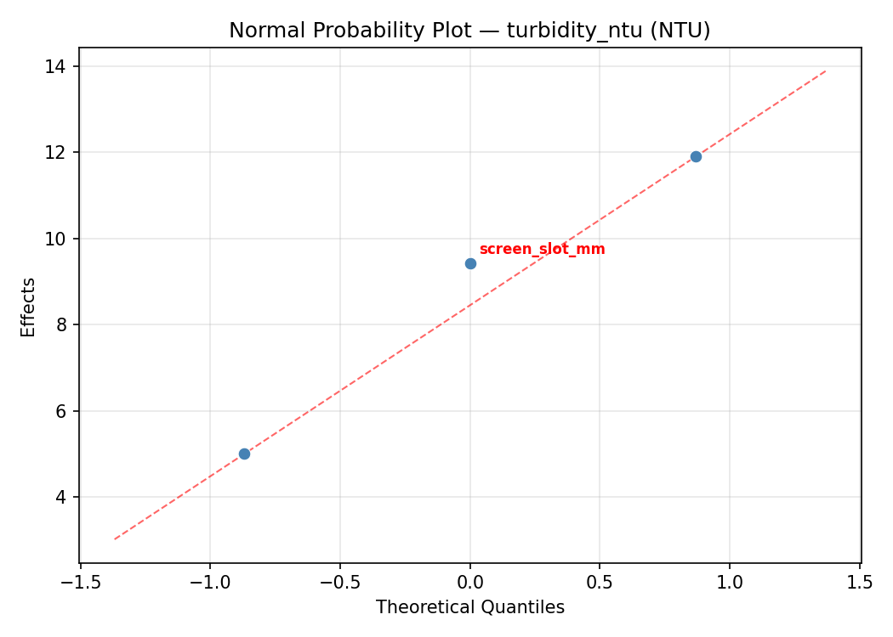
Half-Normal Plot of Effects
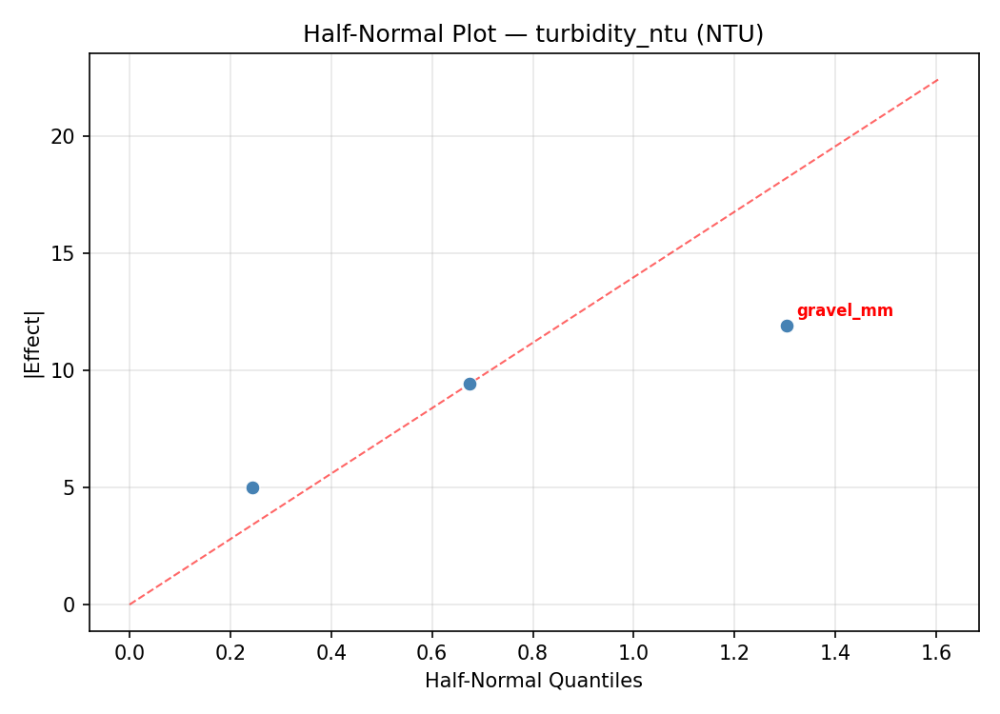
Model Diagnostics
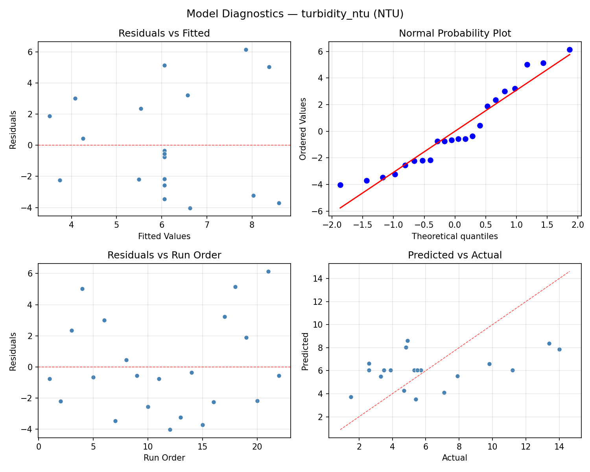
Response Surface Plots
3D surfaces fitted with quadratic RSM. Red dots are observed data points.
flow rate lpm depth m vs gravel mm
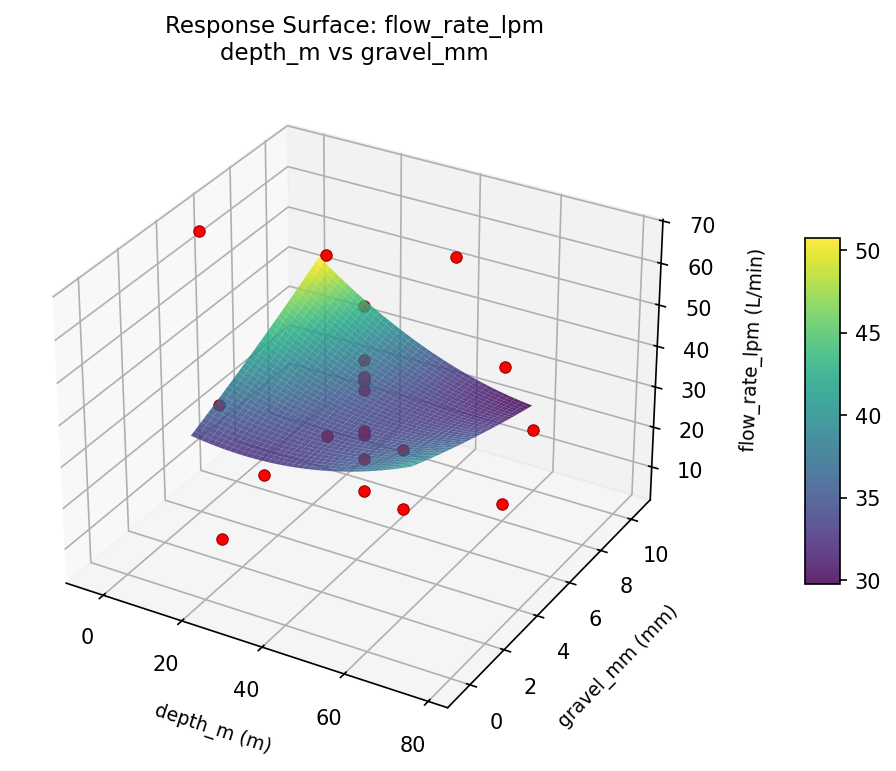
flow rate lpm depth m vs screen slot mm
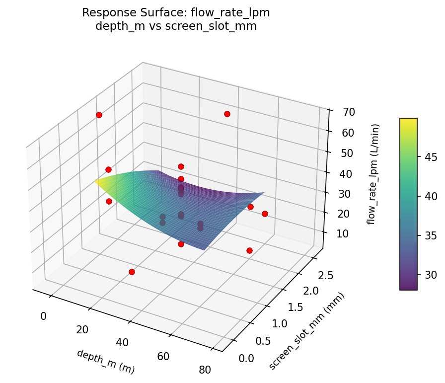
flow rate lpm screen slot mm vs gravel mm
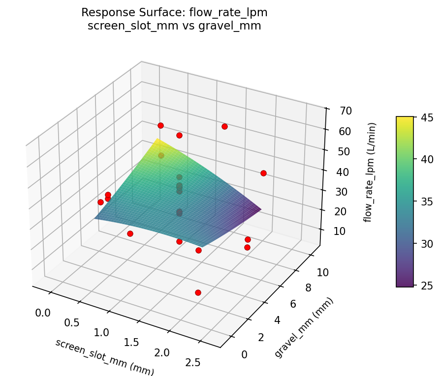
turbidity ntu depth m vs gravel mm
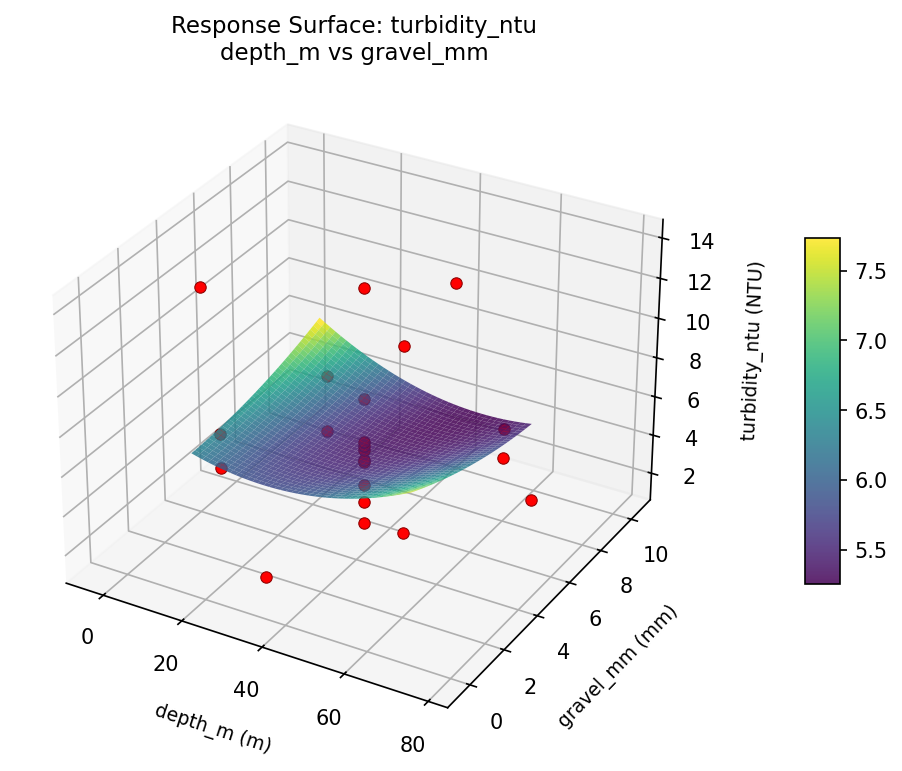
turbidity ntu depth m vs screen slot mm
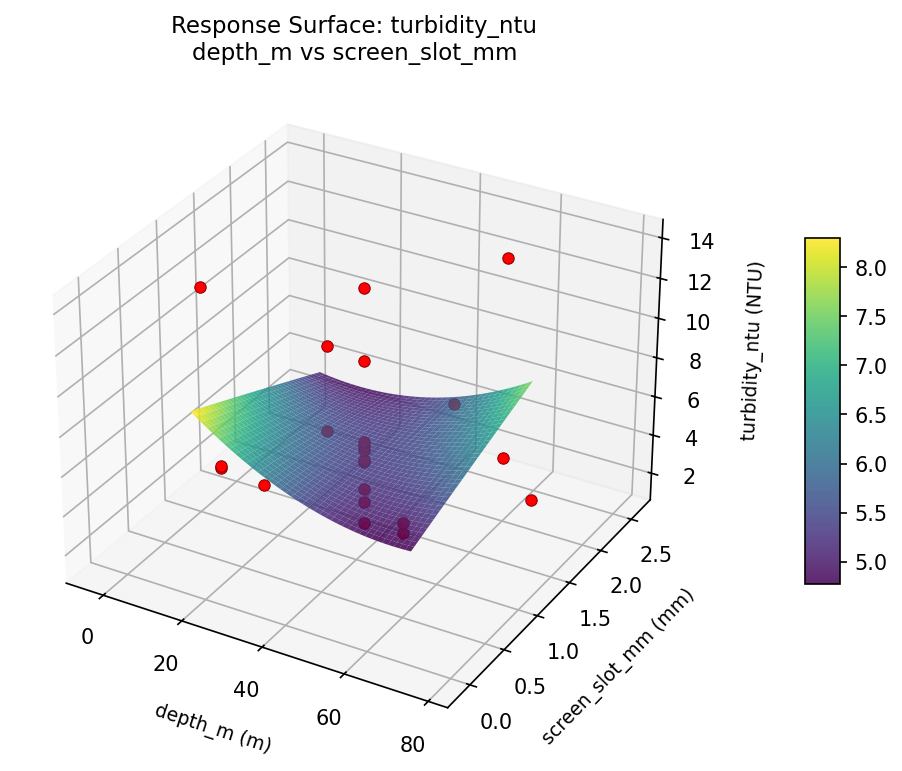
turbidity ntu screen slot mm vs gravel mm
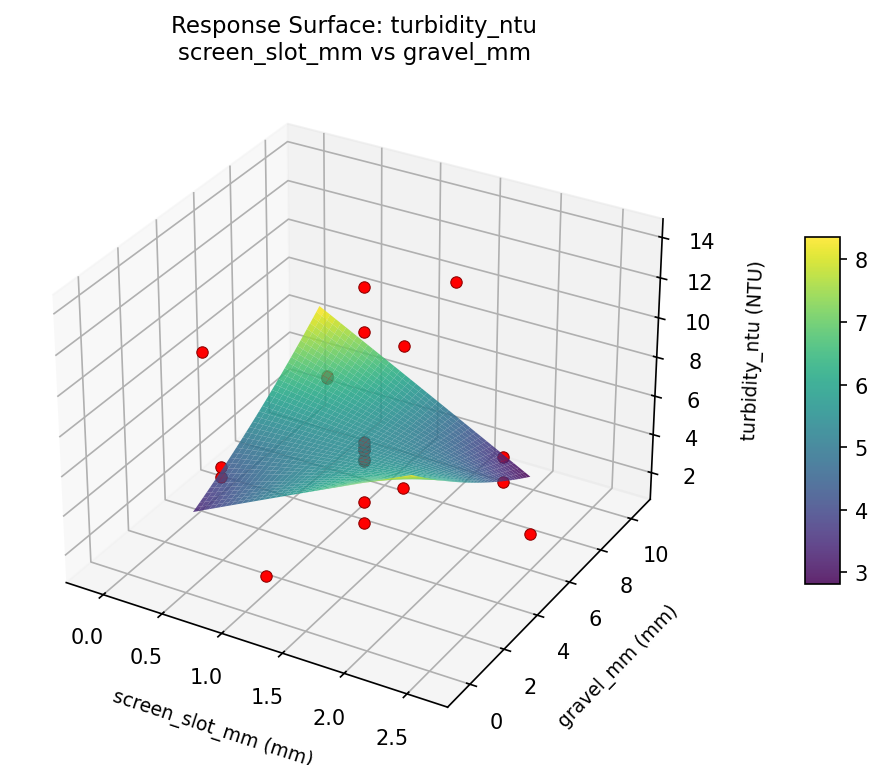
Multi-Objective Optimization
When responses compete, Derringer–Suich desirability finds the best compromise.
Each response is scaled to a 0–1 desirability, then combined via a weighted geometric mean.
Overall Desirability
D = 0.8325
Per-Response Desirability
| Response | Weight | Desirability | Predicted | Dir |
|---|
flow_rate_lpm |
1.5 |
|
59.00 0.8485 59.00 L/min |
↑ |
turbidity_ntu |
1.0 |
|
3.50 0.8091 3.50 NTU |
↓ |
Recommended Settings
| Factor | Value |
|---|
depth_m | 78.5792 m |
screen_slot_mm | 1.25 mm |
gravel_mm | 5 mm |
Source: from observed run #10
Trade-off Summary
Sacrifice = how much worse than single-objective best.
| Response | Predicted | Best Observed | Sacrifice |
|---|
turbidity_ntu | 3.50 | 1.50 | +2.00 |
Top 3 Runs by Desirability
| Run | D | Factor Settings |
|---|
| #9 | 0.7356 | depth_m=37.5, screen_slot_mm=1.25, gravel_mm=-0.477226 |
| #2 | 0.6432 | depth_m=15, screen_slot_mm=0.5, gravel_mm=2 |
Model Quality
| Response | R² | Type |
|---|
turbidity_ntu | 0.0841 | linear |
Full Multi-Objective Output
============================================================
MULTI-OBJECTIVE OPTIMIZATION
Method: Derringer-Suich Desirability Function
============================================================
Overall desirability: D = 0.8325
Response Weight Desirability Predicted Direction
---------------------------------------------------------------------
flow_rate_lpm 1.5 0.8485 59.00 L/min ↑
turbidity_ntu 1.0 0.8091 3.50 NTU ↓
Recommended settings:
depth_m = 78.5792 m
screen_slot_mm = 1.25 mm
gravel_mm = 5 mm
(from observed run #10)
Trade-off summary:
flow_rate_lpm: 59.00 (best observed: 66.00, sacrifice: +7.00)
turbidity_ntu: 3.50 (best observed: 1.50, sacrifice: +2.00)
Model quality:
flow_rate_lpm: R² = 0.4609 (quadratic)
turbidity_ntu: R² = 0.0841 (linear)
Top 3 observed runs by overall desirability:
1. Run #10 (D=0.8325): depth_m=78.5792, screen_slot_mm=1.25, gravel_mm=5
2. Run #9 (D=0.7356): depth_m=37.5, screen_slot_mm=1.25, gravel_mm=-0.477226
3. Run #2 (D=0.6432): depth_m=15, screen_slot_mm=0.5, gravel_mm=2
Full Analysis Output
=== Main Effects: flow_rate_lpm ===
Factor Effect Std Error % Contribution
--------------------------------------------------------------
screen_slot_mm 42.0000 3.4900 45.9%
gravel_mm 35.5000 3.4900 38.8%
depth_m 14.0000 3.4900 15.3%
=== ANOVA Table: flow_rate_lpm ===
Source DF SS MS F p-value
-----------------------------------------------------------------------------
depth_m 4 251.1061 62.7765 0.340 0.8443
screen_slot_mm 4 1413.6061 353.4015 1.915 0.1920
gravel_mm 4 1695.2727 423.8182 2.297 0.1380
Lack of Fit 2 975.7879 487.8939 2.644 0.1395
Pure Error 7 1291.5000 184.5000
Error 9 2267.2879 184.5000
Total 21 5627.2727 267.9654
=== Summary Statistics: flow_rate_lpm ===
depth_m:
Level N Mean Std Min Max
------------------------------------------------------------
-3.57919 1 42.0000 0.0000 42.0000 42.0000
15 4 38.7500 7.6322 28.0000 46.0000
37.5 12 33.6667 17.7320 7.0000 66.0000
60 4 39.7500 24.1022 6.0000 59.0000
78.5792 1 28.0000 0.0000 28.0000 28.0000
screen_slot_mm:
Level N Mean Std Min Max
------------------------------------------------------------
-0.119306 1 10.0000 0.0000 10.0000 10.0000
0.5 4 32.5000 20.8247 6.0000 55.0000
1.25 12 34.3333 15.5466 7.0000 66.0000
2 4 46.0000 9.2014 39.0000 59.0000
2.61931 1 52.0000 0.0000 52.0000 52.0000
gravel_mm:
Level N Mean Std Min Max
------------------------------------------------------------
-0.477226 1 42.0000 0.0000 42.0000 42.0000
10.4772 1 66.0000 0.0000 66.0000 66.0000
2 4 45.5000 14.2478 28.0000 59.0000
5 12 30.5000 14.5384 7.0000 52.0000
8 4 33.0000 18.2392 6.0000 46.0000
=== Main Effects: turbidity_ntu ===
Factor Effect Std Error % Contribution
--------------------------------------------------------------
screen_slot_mm 7.2000 0.7101 35.5%
depth_m 6.9750 0.7101 34.3%
gravel_mm 6.1333 0.7101 30.2%
=== ANOVA Table: turbidity_ntu ===
Source DF SS MS F p-value
-----------------------------------------------------------------------------
depth_m 4 74.5515 18.6379 4.568 0.0274
screen_slot_mm 4 38.5290 9.6323 2.361 0.1309
gravel_mm 4 45.9865 11.4966 2.818 0.0907
Lack of Fit 2 45.3074 22.6537 5.553 0.0359
Pure Error 7 28.5587 4.0798
Error 9 73.8661 4.0798
Total 21 232.9332 11.0921
=== Summary Statistics: turbidity_ntu ===
depth_m:
Level N Mean Std Min Max
------------------------------------------------------------
-3.57919 1 4.7000 0.0000 4.7000 4.7000
15 4 9.5750 4.7696 5.4000 14.0000
37.5 12 5.8333 2.8237 1.5000 11.2000
60 4 4.4250 0.8995 3.5000 5.5000
78.5792 1 2.6000 0.0000 2.6000 2.6000
screen_slot_mm:
Level N Mean Std Min Max
------------------------------------------------------------
-0.119306 1 2.6000 0.0000 2.6000 2.6000
0.5 4 7.2250 4.5792 3.9000 14.0000
1.25 12 5.4083 2.5422 1.5000 11.2000
2 4 6.7750 4.4873 3.5000 13.4000
2.61931 1 9.8000 0.0000 9.8000 9.8000
gravel_mm:
Level N Mean Std Min Max
------------------------------------------------------------
-0.477226 1 5.3000 0.0000 5.3000 5.3000
10.4772 1 11.2000 0.0000 11.2000 11.2000
2 4 7.1000 4.6911 3.5000 14.0000
5 12 5.0667 2.3990 1.5000 9.8000
8 4 6.9000 4.3825 3.9000 13.4000
Optimization Recommendations
=== Optimization: flow_rate_lpm ===
Direction: maximize
Best observed run: #18
depth_m = -3.57919
screen_slot_mm = 1.25
gravel_mm = 5
Value: 66.0
RSM Model (linear, R² = 0.2004, Adj R² = 0.0671):
Coefficients:
intercept +35.8182
depth_m -8.6399
screen_slot_mm -1.0289
gravel_mm -1.0816
RSM Model (quadratic, R² = 0.4475, Adj R² = 0.0331):
Coefficients:
intercept +33.0682
depth_m -8.6399
screen_slot_mm -1.0289
gravel_mm -1.0816
depth_m*screen_slot_mm -5.8750
depth_m*gravel_mm +1.3750
screen_slot_mm*gravel_mm +5.6250
depth_m^2 +2.1750
screen_slot_mm^2 +5.0250
gravel_mm^2 -3.0750
Curvature analysis:
screen_slot_mm coef=+5.0250 convex (has a minimum)
gravel_mm coef=-3.0750 concave (has a maximum)
depth_m coef=+2.1750 convex (has a minimum)
Notable interactions:
depth_m*screen_slot_mm coef=-5.8750 (antagonistic)
screen_slot_mm*gravel_mm coef=+5.6250 (synergistic)
depth_m*gravel_mm coef=+1.3750 (synergistic)
Predicted optimum (from linear model, at observed points):
depth_m = -3.57919
screen_slot_mm = 1.25
gravel_mm = 5
Predicted value: 51.5924
Surface optimum (via L-BFGS-B, linear model):
depth_m = 15
screen_slot_mm = 0.5
gravel_mm = 2
Predicted value: 46.5686
Model quality: Weak fit — consider adding center points or using a different design.
Factor importance:
1. depth_m (effect: 59.0, contribution: 52.5%)
2. gravel_mm (effect: 32.5, contribution: 28.9%)
3. screen_slot_mm (effect: 20.9, contribution: 18.6%)
=== Optimization: turbidity_ntu ===
Direction: minimize
Best observed run: #16
depth_m = 37.5
screen_slot_mm = 1.25
gravel_mm = 5
Value: 1.5
RSM Model (linear, R² = 0.1996, Adj R² = 0.0662):
Coefficients:
intercept +6.0591
depth_m -1.0217
screen_slot_mm +1.1409
gravel_mm -0.9077
RSM Model (quadratic, R² = 0.5499, Adj R² = 0.2123):
Coefficients:
intercept +4.0341
depth_m -1.0217
screen_slot_mm +1.1409
gravel_mm -0.9077
depth_m*screen_slot_mm -0.8375
depth_m*gravel_mm -1.1875
screen_slot_mm*gravel_mm +1.1375
depth_m^2 +1.2525
screen_slot_mm^2 +0.7875
gravel_mm^2 +0.9975
Curvature analysis:
depth_m coef=+1.2525 convex (has a minimum)
gravel_mm coef=+0.9975 convex (has a minimum)
screen_slot_mm coef=+0.7875 convex (has a minimum)
Notable interactions:
depth_m*gravel_mm coef=-1.1875 (antagonistic)
screen_slot_mm*gravel_mm coef=+1.1375 (synergistic)
depth_m*screen_slot_mm coef=-0.8375 (antagonistic)
Predicted optimum (from quadratic model, at observed points):
depth_m = 15
screen_slot_mm = 2
gravel_mm = 8
Predicted value: 11.4890
Surface optimum (via L-BFGS-B, quadratic model):
depth_m = 49.821
screen_slot_mm = 0.5
gravel_mm = 8
Predicted value: 2.2574
Model quality: Moderate fit — use predictions directionally, not precisely.
Factor importance:
1. gravel_mm (effect: 11.4, contribution: 52.2%)
2. depth_m (effect: 5.8, contribution: 26.8%)
3. screen_slot_mm (effect: 4.6, contribution: 21.1%)